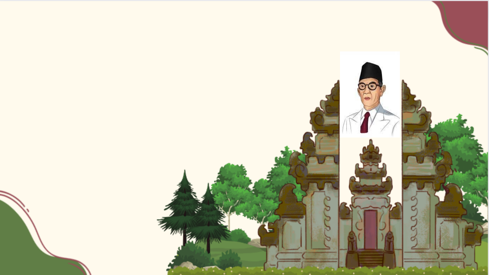
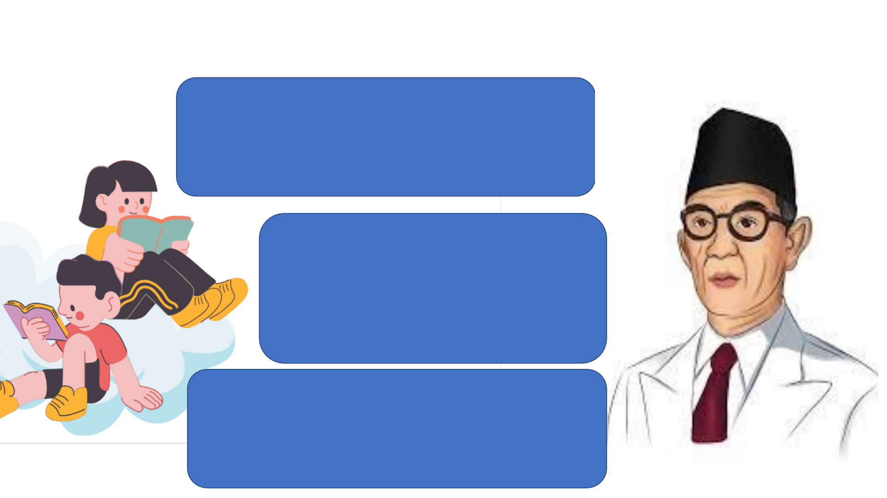
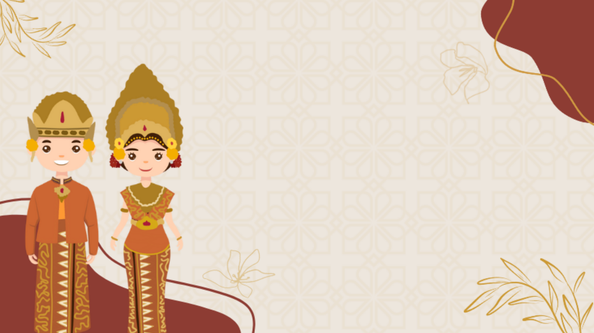
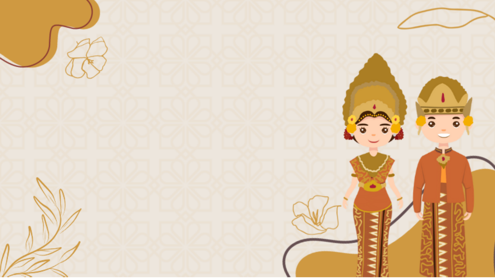
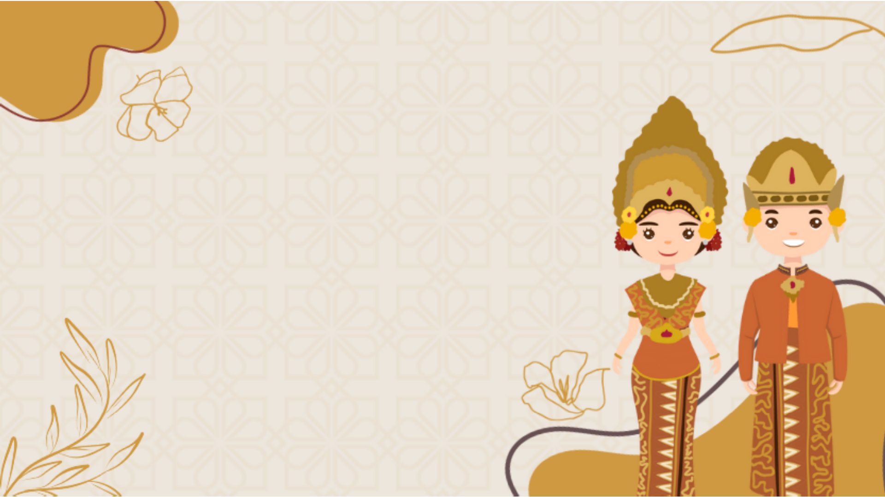
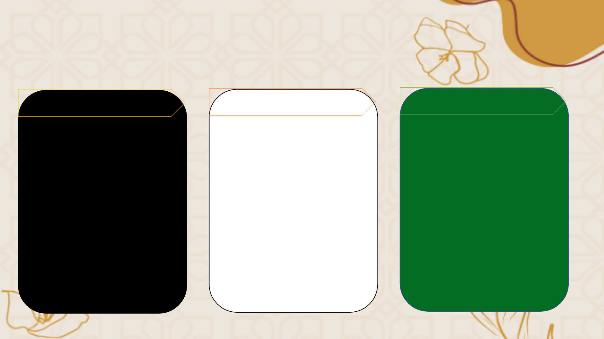
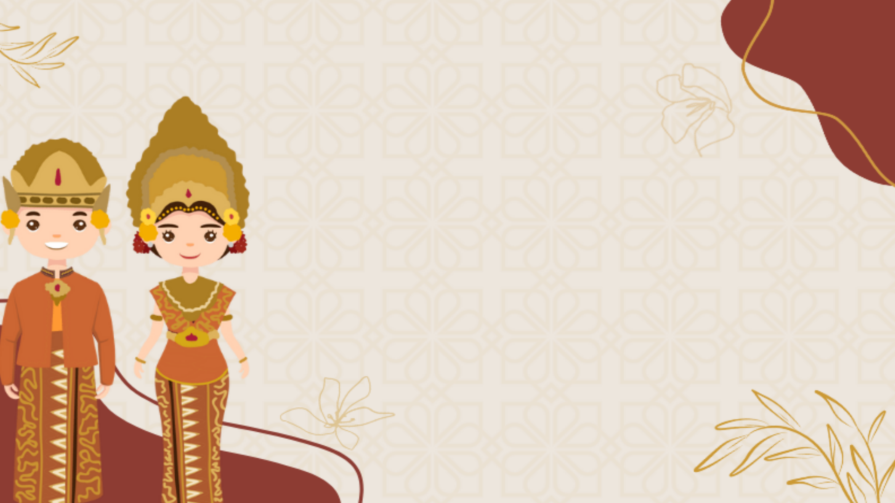
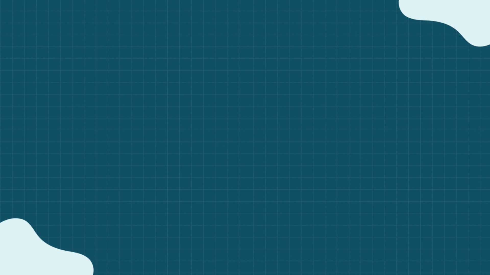

Relevansi Pemikiran KHD
Relevansi Pemikiran KHD
Dalam Konteks
Dalam Konteks
Sosio Kultural
Sosio Kultural
Kelompok:
Ni Komang Wiryani (Penyaji)


Dasar Pemikiran KHD
Menuntun
Memberikan tuntunan atau bimbingan, menjadi
teladan agar anak mencapak keselamatan dan
kebahagiaan yang setinggi-tingginya
Kodrat Alam dan Zaman
Setiap anak memiliki potensi,minat, bakat
dan kebutuhan yang berbeda-beda sesuai
dengan tahapperkembangan anak dan
perkembangan zaman
Budi Pekerti
Hasil dari bersatunya gerak pikiran, perasaan dan
kemauan (budi) sehingga menimbulkan tenaga
(pekerti)

Kekuatan konteks sosio-kultural (nilai-nilai luhur
budaya) di daerah saya yang sejalan dengan
pemikiran KHD
Menurut KHD pendidikan adalah tempat
persemaian benih-benih kebudayaan dalam
masyarakat. Pendidikan dapat menjadi ruang
berlatih dan bertumbuhnya nilai-nilai kemanusiaan
yang dapat diteruskan atau diwariskan.
Masyarakat Bali Mengenal Sebuah Tradisi yang
sangat kental dengan Budayanya yaitu
Tri Hita Karana

Pemikiran KHD dapat dikontekstualkan sesuaikan
dengan nilai-nilai luhur kearifan budaya daerah asal
yang relevan menjadi penguatan karakter murid
sebagai individu sekaligus sebagai anggota
masyarakat pada konteks lokal sosial budaya di
daerah
Pemikiran KHD yang mengingatkan bahwa
pengaruh dari luar tetap harus disaring dengan
tetap mengutamakan kearifan lokal sosial budaya
Indonesia yaitu Tri Hita Karana dipandang sangat
baik digunakan sebagai kerangka dasar dalam
upaya menyaring pengaruh negatif dari era
digital/globalisasi.

(1) Parhyangan, manusia dengan Tuhannya
(2)Palemahan, manusia dengan alam lingkungannya
(3) Pawongan, manusia dengan sesamanya.
Tri yang berarti tiga,
Hita yang berarti kebahagiaan/ kemakmuran/
kesejahteraan, dan
Karana yang berarti penyebab.
Tri Hita Karana adalah tiga hal yang menyebabkan
hubungan harmonis/kebahagiaan hidup
Tri Hita Karana
Tri Hita Karana

Implementasi Tri Hita Karana
Implementasi Tri Hita Karana
Parahyangan
Pawongan
Palemahan
ü Sembahyang saat
memasuki area sekolah
ü Trisandya Sebelum
Memulai pelajaran
ü Berdoa sebelum dan
setelah melaksanakan
PBM
ü Menjaga kebersihan
padmasana sekolah
ü Menerapkan 3 S, Senyum,
Salam Sapa kepada semua
warga sekolah
ü Melakukan Diskusi dan
Kolaborasi Saat
pembelajaran
ü Menerapkan budaya
saling membantu dan
peduli antara warga
sekolah
ü Semua Warga sekolah
turut aktif menjaga
kebersihan Lingkunagn
ü Melaksanakan Piket Di
kelas
ü Semua warga sekolah
turut aktif memelihara
tanaman di sekolah serta
menjaga sarana prasarana
yang ada di sekolah

Kekuatan pemikiran KHD yang menebalkan
laku murid di kelas atau sekolah Anda sesuai
dengan konteks lokal sosial budaya di daerah
Anda yang dapat diterapkan.
Implementasi konsep Tri Hita Karana
memberikan suatu pengaruh terhadap hasil
belajar, sehingga memberikan suatu hasil
yang lebih baik dalam upaya mencapai
aspek kognitif, aspek psikomotorik, dan
aspek afektif yang mampu memberikan
tuntunan hidup kepada para siswa

Kekuatan pemikiran KHD yang menebalkan
laku murid di kelas atau sekolah Anda sesuai
dengan konteks lokal sosial budaya di daerah
Anda yang dapat diterapkan.
Implementasi konsep Tri Hita Karana
memberikan suatu pengaruh terhadap hasil
belajar, sehingga memberikan suatu hasil
yang lebih baik dalam upaya mencapai
aspek kognitif, aspek psikomotorik, dan
aspek afektif yang mampu memberikan
tuntunan hidup kepada para siswa

Penerapan Tri Hita Karana secara baik
akan meningkatkan Kolaborasi dan
keterbukaan antara Siswa dengan siswa
lainnya maupun dengan Guru. Sehingga
menjadi Kekuatan utama untuk
pencapaian kompetensi yang diharapkan
secara bersama-sama
KESIMPULAN
Pemikiran KHD masih sangat relevan
dalam kehidupan dan perlu diterapkan
lebih mendalam di zaman ini. Dengan
perkembangan tekhnologi yang kian
cepat perlu adanya penyaring agar tidak
terlepas dari nilai-nilai luhur budi pekerti
yang mampu menjaga keutuhan NKRI
